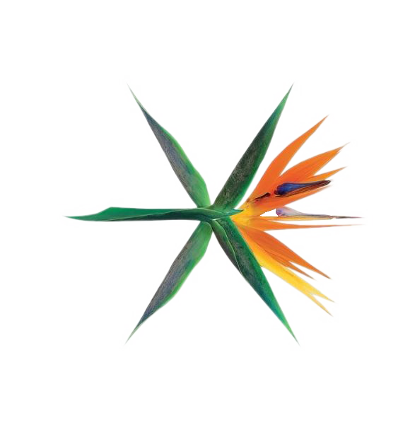
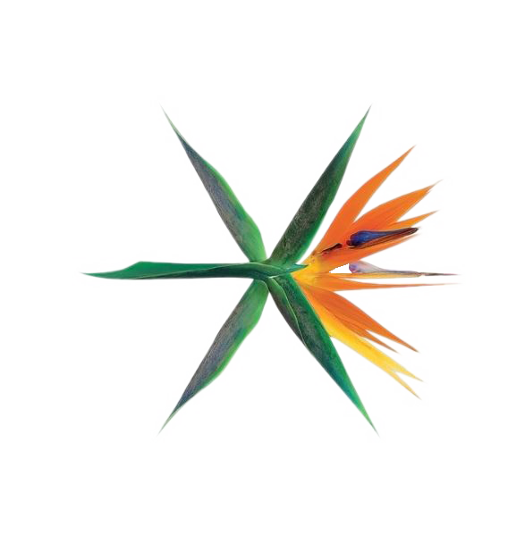
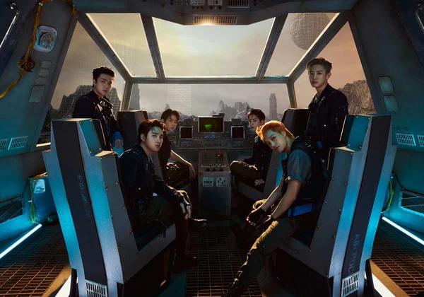

EXO Planet
Imágenes de EXO


Listas de cosas realcionadas a EXO
Álbumes de EXO
Lista hecha por Cynthia
- Exodus
- The War
- Love Shot
 


Miembros de Exo
- Chanyeol
- D.O
- Kai
- Baek Hyun
- Sehun
- Xiumin
- Su Ho
- Lay
- Chen
Pre-Debut
En mayo de 2011, en un seminario de negocios 'Hallyu', celebrado en la Universidad de Stanford, Lee Soo Man, habló de una estrategia para debutar un nuevo grupo de chicos, temporalmente llamado 'M1'. En principio se creyó que tendría 7 integrantes ya que se había filtrado en Internet una imagen de sólo 7 de ellos ensayando.
En diciembre de 2011, después de varios cambios, SM Entertainment confirmó que el nuevo grupo se llamaría EXO, en referencia a la palabra 'exoplaneta' . Este grupo estaría conformado por doce integrantes de los cuales ocho miembros eran ciudadanos de Corea del Sur y los otros cuatro ciudadanos de nacionalidad China. El grupo se dividiría en dos sub-grupos: EXO-K, ('K' por "Korean", que en inglés significa Coreano) y EXO-M ('M' por "Mandarín", idioma oficial de China). Cada sub-grupo estaría compuesto por seis miembros cada uno y promocionarían las mismas canciones al mismo tiempo pero de manera separada, EXO-K en Corea del Sur en idioma coreano y EXO-M en China en mandarín.
A partir del 21 de diciembre, SM Entertainment comenzó a lanzar una serie de vídeos teaser en donde se mostraban a los diferentes miembros de EXO demostrando sus habilidades en baile, artes marciales y canto. El primer miembro en ser revelado fue Kai, seguido por Luhan el 26 de diciembre y Tao el 27 de diciembre.
El 29 de diciembre de 2011, durante las celebraciones de fin de año en Corea, los tres miembros anteriormente revelados se presentaron en el programa de la SBS Gayo Daejun. En esta oportunidad, un cuarto miembro fue revelado, Chen, en la cual fue su primera aparición en la televisión coreana y como miembro de EXO.
El día 9 de Enero de 2012, fue revelado el quinto miembro Sehun, demostrando sus habilidades en el baile. Sólo un día después, se reveló otro teaser nuevamente con Sehun pero en esta ocasión el vídeo mostró por primera vez a los doce miembros juntos. El 16 de enero de 2012, se reveló al sexto miembro, Lay, mostrando sus habilidades de baile. El 24 de enero fue el turno de revelar al séptimo, Xiumin.
Debut con su primer mini-álbum 'MAMA'
El 31 de Marzo de 2012, EXO realizó un Showcase en el Parque Olímpico de Seúl y al día siguiente, el 1 de Abril de 2012 en la 'Universidad de Negocios Internacionales y Economía en Beijing', China en donde presentaron su canción titulada 'MAMA'.
El 7 de abril, EXO lanzó su vídeo musical 'MAMA' en sus 2 versiones. Ese mismo día, se reveló que el primer mini álbum del grupo saldría a la venta el 9 de abril y contaría con 6 canciones, siendo la canción principal 'MAMA'.
El 8 de Abril de 2012, EXO-K realizó su presentación debut en Inkigayo (SBS) en Corea del Sur, mientras que EXO-M lo hizo el mismo día en la 12° Ceremonia de Premiación Yin Yue Feng Yun Bang en China, ambos con las canciones 'History' y 'MAMA'.
El 9 de abril de 2012, se lanzó su primer mini álbum 'MAMA'. A sólo un día de haber lanzado, en su versión china, alcanzó el puesto número uno en varias listas musicales de China, mientras que el álbum obtuvo lugares altos en listas como las de Sina Álbum Chart", Gaon Chart y Billboard World Albums Chart. El equivalente coreano del álbum alcanzó la primera posición del Gaon Album Chart y el lugar número ocho en la lista mundial de álbumes de Billboard.
En noviembre de 2012, EXO ganó "Best New Asian Artist Group" en los 2012 Mnet Asian Music Awards. EXO-K recibió tres nominaciones en el 27th Golden Disk Awards, ganando el "Newcomer Award". EXO-M recibió el premio "Most Popular Group" en el 2013 Top Chinese Music Awards.
Unificación de un solo EXO
Con la confirmación de la salida de Tao, SM Entertainment anunció oficialmente que EXO seguiría con 9 miembros. También anunció que EXO-K & EXO-M se fusionarían en un único grupo. Según la SM, EXO ya no tendría sub-grupos y promocionaría como un grupo único de 9 miembros tanto en Corea, China y ahora también Japón, unificándose así en "un solo EXO". Suho continuó siendo el líder, siendo el primer grupo de la compañía en el que el miembro de mayor edad no era el líder.
Después de su unificación, la primer canción que sacaron (haciendo con ella su debut en Japón es 'Love Me Right' era una canción pop que transmitía en sus letras la emoción que sienten las personas cuando se enamoran, además de tener una melodía de baile refrescante. La canción fue producida para demostrar el agradecimiento hacia las fans que continuaban apoyando a EXO con su próximo debut. El segundo single 'Drop That', expresaría la emoción de los miembros al presentarse en el Dome de Japón, ya que EXO y las fans se ayudaron mutuamente a elevarse como uno. El single tendría 9 versiones distintas y el mismo sencillo además tendría tres versiones a la hora de comprarla.
Para ver imágenes:
Entrar a este link
¿Cuál es tu Sub-Unidad favorita?
¿Cuál es el poder de los integrantes que más te gusta?